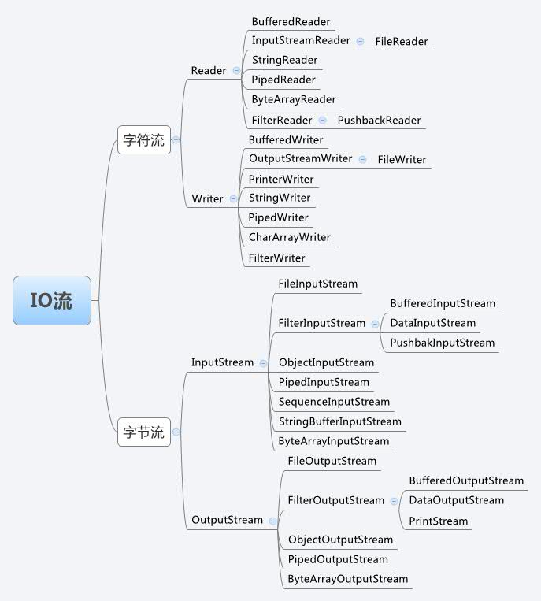

<!DOCTYPE html>


  <html class="light page-post">


<head><meta name="generator" content="Hexo 3.8.0">
  <meta charset="utf-8">
  
  <title>java流笔记 | 胡思旺</title>

  <meta name="viewport" content="width=device-width, initial-scale=1, maximum-scale=1">

  
    <meta name="keywords" content="全栈,微服务,Java,Netty,Vue,机器学习,Python">
  

  <meta name="description" content="Java流 字符流与字节流Java IO中的流操作分为两类:  字节流(byte)：主要是:InputStream（输入） 和 OutputStream（输出）   字符流：操作字符类型数据，一个字符占两个字节。主要是Reader（输入）和Writer（输出）流操作一般流程:  1234567一.使用File类绑定一个文件。二.把File对象绑定到流对象上。三.进行读或写操作。四.关闭流">
<meta property="og:type" content="article">
<meta property="og:title" content="java流笔记">
<meta property="og:url" content="http://yoursite.com/2018/10/31/java流笔记/index.html">
<meta property="og:site_name" content="胡思旺">
<meta property="og:description" content="Java流 字符流与字节流Java IO中的流操作分为两类:  字节流(byte)：主要是:InputStream（输入） 和 OutputStream（输出）   字符流：操作字符类型数据，一个字符占两个字节。主要是Reader（输入）和Writer（输出）流操作一般流程:  1234567一.使用File类绑定一个文件。二.把File对象绑定到流对象上。三.进行读或写操作。四.关闭流">
<meta property="og:locale" content="default">
<meta property="og:image" content="http://yoursite.com/2018/10/31/java流笔记/io.png">
<meta property="og:updated_time" content="2018-12-04T03:54:32.151Z">
<meta name="twitter:card" content="summary">
<meta name="twitter:title" content="java流笔记">
<meta name="twitter:description" content="Java流 字符流与字节流Java IO中的流操作分为两类:  字节流(byte)：主要是:InputStream（输入） 和 OutputStream（输出）   字符流：操作字符类型数据，一个字符占两个字节。主要是Reader（输入）和Writer（输出）流操作一般流程:  1234567一.使用File类绑定一个文件。二.把File对象绑定到流对象上。三.进行读或写操作。四.关闭流">
<meta name="twitter:image" content="http://yoursite.com/2018/10/31/java流笔记/io.png">

  

  
    <link rel="icon" href="/favicon.ico">
  

  <link href="/css/styles.css?v=c114cben" rel="stylesheet">


  
    <link rel="stylesheet" href="/css/personal-style.css">
  

  

  
  <script type="text/javascript">
    var _hmt = _hmt || [];
    (function() {
      var hm = document.createElement("script");
      hm.src = "//hm.baidu.com/hm.js?57e94d016e201fba3603a8a2b0263af0";
      var s = document.getElementsByTagName("script")[0];
      s.parentNode.insertBefore(hm, s);
    })();
  </script>


  
  <script type="text/javascript">
	(function(){
	    var bp = document.createElement('script');
	    var curProtocol = window.location.protocol.split(':')[0];
	    if (curProtocol === 'https') {
	        bp.src = 'https://zz.bdstatic.com/linksubmit/push.js';        
	    }
	    else {
	        bp.src = 'http://push.zhanzhang.baidu.com/push.js';
	    }
	    var s = document.getElementsByTagName("script")[0];
	    s.parentNode.insertBefore(bp, s);
	})();
  </script>


  

</head>
</html>
<body>


  
    <span id="toolbox-mobile" class="toolbox-mobile">盒子</span>
  

  <div class="post-header CENTER">
   
  <div class="toolbox">
    <a class="toolbox-entry" href="/">
      <span class="toolbox-entry-text">盒子</span>
      <i class="icon-angle-down"></i>
      <i class="icon-home"></i>
    </a>
    <ul class="list-toolbox">
      
        <li class="item-toolbox">
          <a class="CIRCLE" href="/archives/" rel="noopener noreferrer" target="_self">
            博客
          </a>
        </li>
      
        <li class="item-toolbox">
          <a class="CIRCLE" href="/project/" rel="noopener noreferrer" target="_self">
            项目
          </a>
        </li>
      
        <li class="item-toolbox">
          <a class="CIRCLE" href="/category/" rel="noopener noreferrer" target="_self">
            分类
          </a>
        </li>
      
        <li class="item-toolbox">
          <a class="CIRCLE" href="/search/" rel="noopener noreferrer" target="_self">
            搜索
          </a>
        </li>
      
        <li class="item-toolbox">
          <a class="CIRCLE" href="/about/" rel="noopener noreferrer" target="_self">
            联系
          </a>
        </li>
      
    </ul>
  </div>


</div>


  <div id="toc" class="toc-article">
    <strong class="toc-title">文章目录</strong>
    <ol class="toc"><li class="toc-item toc-level-1"><a class="toc-link" href="#Java流"><span class="toc-text">Java流</span></a><ol class="toc-child"><li class="toc-item toc-level-2"><a class="toc-link" href="#字符流与字节流"><span class="toc-text">字符流与字节流</span></a></li><li class="toc-item toc-level-2"><a class="toc-link" href="#类框架图"><span class="toc-text">类框架图</span></a></li></ol></li></ol>
  </div>


<div class="content content-post CENTER">
   <article id="post-java流笔记" class="article article-type-post" itemprop="blogPost">
  <header class="article-header">
    <h1 class="post-title">java流笔记</h1>

    <div class="article-meta">
      <span>
        <i class="icon-calendar"></i>
        <span>2018.10.31</span>
      </span>

      
        <span class="article-author">
          <i class="icon-user"></i>
          <span>siwang.hu</span>
        </span>
      

      
  <span class="article-category">
    <i class="icon-list"></i>
    <a class="article-category-link" href="/categories/javaIO/">javaIO</a>
  </span>


      
        <span>
          <i class="icon-comment"></i>
          <a href="http://www.github.com/siwanghu/2018/10/31/java流笔记/#disqus_thread"></a>
        </span>
      

      
      
    </div>
  </header>

  <div class="article-content">
    
      <h1 id="Java流"><a href="#Java流" class="headerlink" title="Java流"></a>Java流</h1><blockquote>
<h2 id="字符流与字节流"><a href="#字符流与字节流" class="headerlink" title="字符流与字节流"></a><strong>字符流与字节流</strong></h2><p>Java IO中的流操作分为两类:</p>
<ul>
<li>字节流(byte)：主要是:InputStream（输入） 和 OutputStream（输出）  </li>
<li>字符流：操作字符类型数据，一个字符占两个字节。主要是Reader（输入）和Writer（输出）<br><strong>流操作一般流程:</strong>  <figure class="highlight plain"><table><tr><td class="gutter"><pre><span class="line">1</span><br><span class="line">2</span><br><span class="line">3</span><br><span class="line">4</span><br><span class="line">5</span><br><span class="line">6</span><br><span class="line">7</span><br></pre></td><td class="code"><pre><span class="line">一.使用File类绑定一个文件。</span><br><span class="line"></span><br><span class="line">二.把File对象绑定到流对象上。</span><br><span class="line"></span><br><span class="line">三.进行读或写操作。</span><br><span class="line"></span><br><span class="line">四.关闭流</span><br></pre></td></tr></table></figure>
</li>
</ul>
</blockquote>
<blockquote>
<ul>
<li><p>字节流主要操作字节类型数据（byte）；字符流主要操作字符类型数据，一个字符占两个字节  </p>
</li>
<li><p>字节流在操作时本身不会用到缓冲区（内存），而是对文件本身直接操作的；字符流在操作时使用了缓冲区，通过缓冲区再操作文件  </p>
<h2 id="类框架图"><a href="#类框架图" class="headerlink" title="类框架图"></a><strong>类框架图</strong></h2><p>  </p>
</li>
</ul>
<ul>
<li>InputStream是所有的输入字节流的父类，它是一个抽象类，主要包含三个方法:<figure class="highlight plain"><table><tr><td class="gutter"><pre><span class="line">1</span><br><span class="line">2</span><br><span class="line">3</span><br><span class="line">4</span><br><span class="line">5</span><br><span class="line">6</span><br><span class="line">7</span><br><span class="line">8</span><br></pre></td><td class="code"><pre><span class="line">//读取一个字节并以整数的形式返回(0~255),如果返回-1已到输入流的末尾。 </span><br><span class="line">int read() ； </span><br><span class="line"></span><br><span class="line">//读取一系列字节并存储到一个数组buffer，返回实际读取的字节数，如果读取前已到输入流的末尾返回-1。 </span><br><span class="line">int read(byte[] buffer) ； </span><br><span class="line"></span><br><span class="line">//读取length个字节并存储到一个字节数组buffer，从off位置开始存,最多len， 返回实际读取的字节数，如果读取前以到输入流的末尾返回-1。 </span><br><span class="line">int read(byte[] buffer, int off, int len) ；</span><br></pre></td></tr></table></figure>
</li>
</ul>
</blockquote>
<blockquote>
<ul>
<li>Reader 是所有的输入字符流的父类，它是一个抽象类，主要包含三个方法：  <figure class="highlight plain"><table><tr><td class="gutter"><pre><span class="line">1</span><br><span class="line">2</span><br><span class="line">3</span><br><span class="line">4</span><br><span class="line">5</span><br><span class="line">6</span><br><span class="line">7</span><br><span class="line">8</span><br></pre></td><td class="code"><pre><span class="line">//读取一个字符并以整数的形式返回(0~255),如果返回-1已到输入流的末尾。 </span><br><span class="line">int read() ； </span><br><span class="line"></span><br><span class="line">//读取一系列字符并存储到一个数组buffer，返回实际读取的字符数，如果读取前已到输入流的末尾返回-1。 </span><br><span class="line">int read(char[] cbuf) ； </span><br><span class="line"></span><br><span class="line">//读取length个字符,并存储到一个数组buffer，从off位置开始存,最多读取len，返回实际读取的字符数，如果读取前以到输入流的末尾返回-1。 </span><br><span class="line">int read(char[] cbuf, int off, int len)</span><br></pre></td></tr></table></figure>
</li>
</ul>
</blockquote>
<blockquote>
<ul>
<li>OutputStream 是所有的输出字节流的父类，它是一个抽象类，主要包含如下四个方法：  <figure class="highlight plain"><table><tr><td class="gutter"><pre><span class="line">1</span><br><span class="line">2</span><br><span class="line">3</span><br><span class="line">4</span><br><span class="line">5</span><br><span class="line">6</span><br><span class="line">7</span><br><span class="line">8</span><br><span class="line">9</span><br><span class="line">10</span><br><span class="line">11</span><br></pre></td><td class="code"><pre><span class="line">//向输出流中写入一个字节数据,该字节数据为参数b的低8位。 </span><br><span class="line">void write(int b) ; </span><br><span class="line"></span><br><span class="line">//将一个字节类型的数组中的数据写入输出流。 </span><br><span class="line">void write(byte[] b); </span><br><span class="line"></span><br><span class="line">//将一个字节类型的数组中的从指定位置（off）开始的,len个字节写入到输出流。 </span><br><span class="line">void write(byte[] b, int off, int len); </span><br><span class="line"></span><br><span class="line">//将输出流中缓冲的数据全部写出到目的地。 </span><br><span class="line">void flush();</span><br></pre></td></tr></table></figure>
</li>
</ul>
</blockquote>
<blockquote>
<ul>
<li>Writer 是所有的输出字符流的父类，它是一个抽象类,主要包含如下六个方法：  <figure class="highlight plain"><table><tr><td class="gutter"><pre><span class="line">1</span><br><span class="line">2</span><br><span class="line">3</span><br><span class="line">4</span><br><span class="line">5</span><br><span class="line">6</span><br><span class="line">7</span><br><span class="line">8</span><br><span class="line">9</span><br><span class="line">10</span><br><span class="line">11</span><br><span class="line">12</span><br><span class="line">13</span><br><span class="line">14</span><br><span class="line">15</span><br><span class="line">16</span><br><span class="line">17</span><br></pre></td><td class="code"><pre><span class="line">//向输出流中写入一个字符数据,该字节数据为参数b的低16位。 </span><br><span class="line">void write(int c); </span><br><span class="line"></span><br><span class="line">//将一个字符类型的数组中的数据写入输出流， </span><br><span class="line">void write(char[] cbuf) </span><br><span class="line"></span><br><span class="line">//将一个字符类型的数组中的从指定位置（offset）开始的,length个字符写入到输出流。 </span><br><span class="line">void write(char[] cbuf, int offset, int length); </span><br><span class="line"></span><br><span class="line">//将一个字符串中的字符写入到输出流。 </span><br><span class="line">void write(String string); </span><br><span class="line"></span><br><span class="line">//将一个字符串从offset开始的length个字符写入到输出流。 </span><br><span class="line">void write(String string, int offset, int length); </span><br><span class="line"></span><br><span class="line">//将输出流中缓冲的数据全部写出到目的地。 </span><br><span class="line">void flush()</span><br></pre></td></tr></table></figure></li>
</ul>
</blockquote>

    
  </div>

</article>


   
  <div class="text-center donation">
    <div class="inner-donation">
      <span class="btn-donation">支持一下</span>
      <div class="donation-body">
        <div class="tip text-center">扫一扫，支持胡思旺</div>
        <ul>
        
          <li class="item">
            
              <span>微信扫一扫</span>
            
            
          </li>
        
          <li class="item">
            
              <span>支付宝扫一扫</span>
            
            
          </li>
        
        </ul>
      </div>
    </div>
  </div>


   
  <div class="box-prev-next clearfix">
    <a class="show pull-left" href="/2018/10/31/redis笔记/">
        <i class="icon icon-angle-left"></i>
    </a>
    <a class="show pull-right" href="/2018/10/31/ros笔记/">
        <i class="icon icon-angle-right"></i>
    </a>
  </div>


   
      <div class="git"></div>
   
</div>


  <a id="backTop" class="back-top">
    <i class="icon-angle-up"></i>
  </a>


  <div class="modal" id="modal">
  <span id="cover" class="cover hide"></span>
  <div id="modal-dialog" class="modal-dialog hide-dialog">
    <div class="modal-header">
      <span id="close" class="btn-close">关闭</span>
    </div>
    <hr>
    <div class="modal-body">
      <ul class="list-toolbox">
        
          <li class="item-toolbox">
            <a class="CIRCLE" href="/archives/" rel="noopener noreferrer" target="_self">
              博客
            </a>
          </li>
        
          <li class="item-toolbox">
            <a class="CIRCLE" href="/project/" rel="noopener noreferrer" target="_self">
              项目
            </a>
          </li>
        
          <li class="item-toolbox">
            <a class="CIRCLE" href="/category/" rel="noopener noreferrer" target="_self">
              分类
            </a>
          </li>
        
          <li class="item-toolbox">
            <a class="CIRCLE" href="/search/" rel="noopener noreferrer" target="_self">
              搜索
            </a>
          </li>
        
          <li class="item-toolbox">
            <a class="CIRCLE" href="/about/" rel="noopener noreferrer" target="_self">
              联系
            </a>
          </li>
        
      </ul>

    </div>
  </div>
</div>


  
      <div class="fexo-comments comments-post">
    
  <section class="disqus-comments">
    <div id="disqus_thread">
      <noscript>Please enable JavaScript to view the <a href="//disqus.com/?ref_noscript">comments powered by Disqus.</a></noscript>
    </div>
  </section>

  <script>
    var disqus_shortname = 'forsigner';
    
    var disqus_url = 'http://yoursite.com/2018/10/31/java流笔记/';
    
    (function(){
      var dsq = document.createElement('script');
      dsq.type = 'text/javascript';
      dsq.async = true;
      dsq.src = '//' + disqus_shortname + '.disqus.com/embed.js';
      (document.getElementsByTagName('head')[0] || document.getElementsByTagName('body')[0]).appendChild(dsq);
    })();
  </script>

  <script id="dsq-count-scr" src="//forsigner.disqus.com/count.js" async></script>


    

    
    

    

    
    

  </div>

  

  <script type="text/javascript">
  function loadScript(url, callback) {
    var script = document.createElement('script')
    script.type = 'text/javascript';

    if (script.readyState) { //IE
      script.onreadystatechange = function() {
        if (script.readyState == 'loaded' ||
          script.readyState == 'complete') {
          script.onreadystatechange = null;
          callback();
        }
      };
    } else { //Others
      script.onload = function() {
        callback();
      };
    }

    script.src = url;
    document.getElementsByTagName('head')[0].appendChild(script);
  }

  window.onload = function() {
    loadScript('/js/bundle.js?235683', function() {
      // load success
    });
  }
</script>

</body>
</html>
